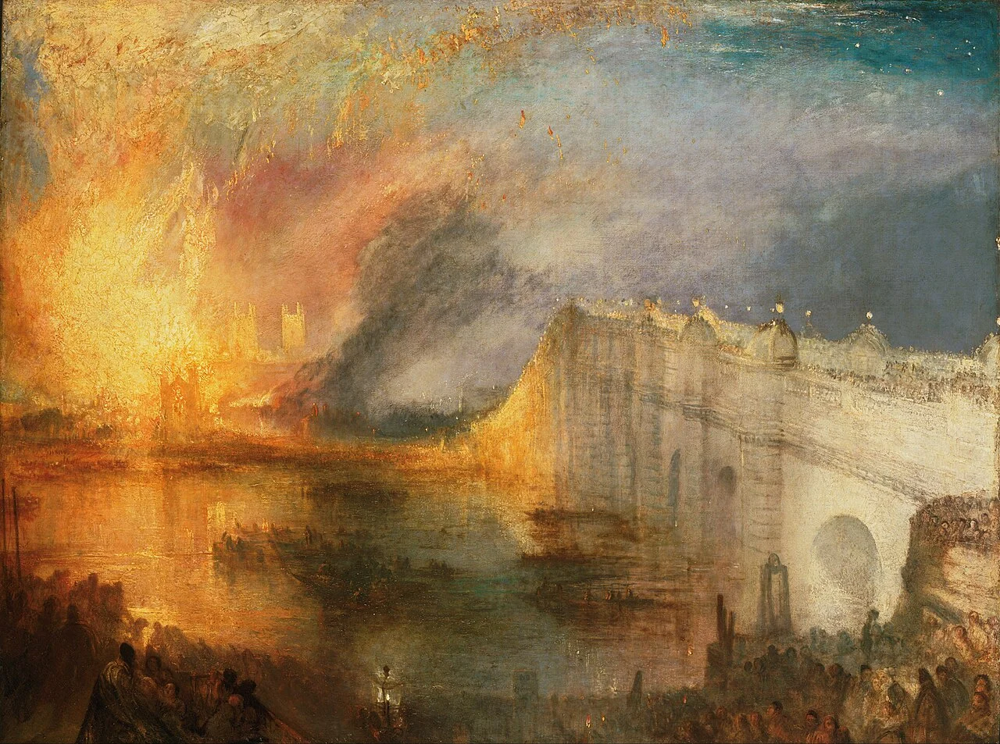
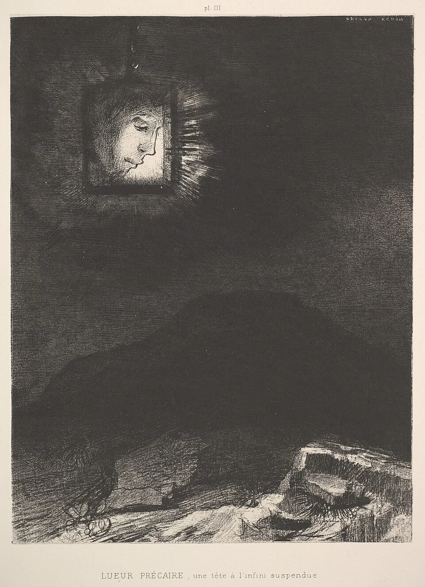
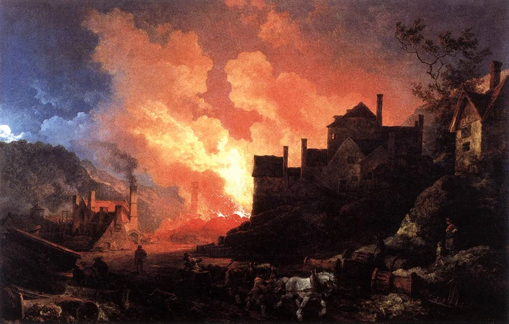

Music
Full SoundCloud catalog
Visual archive

The Destruction of Sodom and Gomorrah
John Martin · 1852


The Burning of the Houses of Lords and Commons, October 16, 1834
J. M. W. Turner · c. 1835


The Vague Glimmer of a Head Suspended in Space
Odilon Redon · 1891


Coalbrookdale by Night
Philip James de Loutherbourg · 1801

About
STRYFEBOOLS is an alternative dark hip-hop project.